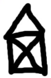

Permission is granted to copy, distribute and/or modify this document under the terms of the GNU Free Documentation License, Version 1.3 or any later version published by the Free Software Foundation; with Invariant Sections being Foreword, Preface, and Contributor List, no Front-Cover Texts, and no Back-Cover Texts. A copy of the license is included in the section entitled “GNU Free Documentation License”.
As an educator, researcher, and book author, I am delighted to see the completion of this book. Python is a fun and extremely easy-to-use programming language that has steadily gained in popularity over the last few years. Developed over ten years ago by Guido van Rossum, Python’s simple syntax and overall feel is largely derived from ABC, a teaching language that was developed in the 1980’s. However, Python was also created to solve real problems and it borrows a wide variety of features from programming languages such as C++, Java, Modula-3, and Scheme. Because of this, one of Python’s most remarkable features is its broad appeal to professional software developers, scientists, researchers, artists, and educators.
Despite Python’s appeal to many different communities, you may still wonder why Python? or why teach programming with Python? Answering these questions is no simple task—especially when popular opinion is on the side of more masochistic alternatives such as C++ and Java. However, I think the most direct answer is that programming in Python is simply a lot of fun and more productive.
When I teach computer science courses, I want to cover important concepts in addition to making the material interesting and engaging to students. Unfortunately, there is a tendency for introductory programming courses to focus far too much attention on mathematical abstraction and for students to become frustrated with annoying problems related to low-level details of syntax, compilation, and the enforcement of seemingly arcane rules. Although such abstraction and formalism is important to professional software engineers and students who plan to continue their study of computer science, taking such an approach in an introductory course mostly succeeds in making computer science boring. When I teach a course, I don’t want to have a room of uninspired students. I would much rather see them trying to solve interesting problems by exploring different ideas, taking unconventional approaches, breaking the rules, and learning from their mistakes. In doing so, I don’t want to waste half of the semester trying to sort out obscure syntax problems, unintelligible compiler error messages, or the several hundred ways that a program might generate a general protection fault.
One of the reasons why I like Python is that it provides a really nice balance between the practical and the conceptual. Since Python is interpreted, beginners can pick up the language and start doing neat things almost immediately without getting lost in the problems of compilation and linking. Furthermore, Python comes with a large library of modules that can be used to do all sorts of tasks ranging from web-programming to graphics. Having such a practical focus is a great way to engage students and it allows them to complete significant projects. However, Python can also serve as an excellent foundation for introducing important computer science concepts. Since Python fully supports procedures and classes, students can be gradually introduced to topics such as procedural abstraction, data structures, and object-oriented programming — all of which are applicable to later courses on Java or C++. Python even borrows a number of features from functional programming languages and can be used to introduce concepts that would be covered in more detail in courses on Scheme and Lisp.
In reading Jeffrey’s preface, I am struck by his comments that Python allowed him to see a higher level of success and a lower level of frustration and that he was able to move faster with better results. Although these comments refer to his introductory course, I sometimes use Python for these exact same reasons in advanced graduate level computer science courses at the University of Chicago. In these courses, I am constantly faced with the daunting task of covering a lot of difficult course material in a blistering nine week quarter. Although it is certainly possible for me to inflict a lot of pain and suffering by using a language like C++, I have often found this approach to be counterproductive—especially when the course is about a topic unrelated to just programming. I find that using Python allows me to better focus on the actual topic at hand while allowing students to complete substantial class projects.
Although Python is still a young and evolving language, I believe that it has a bright future in education. This book is an important step in that direction. David Beazley University of Chicago Author of the Python Essential Reference
This book owes its existence to the collaboration made possible by the Internet and the free software movement. Its three authors—a college professor, a high school teacher, and a professional programmer—never met face to face to work on it, but we have been able to collaborate closely, aided by many other folks who have taken the time and energy to send us their feedback.
We think this book is a testament to the benefits and future possibilities of this kind of collaboration, the framework for which has been put in place by Richard Stallman and the Free Software Foundation.
In 1999, the College Board’s Advanced Placement (AP) Computer Science exam was given in C++ for the first time. As in many high schools throughout the country, the decision to change languages had a direct impact on the computer science curriculum at Yorktown High School in Arlington, Virginia, where I teach. Up to this point, Pascal was the language of instruction in both our first-year and AP courses. In keeping with past practice of giving students two years of exposure to the same language, we made the decision to switch to C++ in the first year course for the 1997-98 school year so that we would be in step with the College Board’s change for the AP course the following year.
Two years later, I was convinced that C++ was a poor choice to use for introducing students to computer science. While it is certainly a very powerful programming language, it is also an extremely difficult language to learn and teach. I found myself constantly fighting with C++’s difficult syntax and multiple ways of doing things, and I was losing many students unnecessarily as a result. Convinced there had to be a better language choice for our first-year class, I went looking for an alternative to C++.
I needed a language that would run on the machines in our GNU/Linux lab as well as on the Windows and Macintosh platforms most students have at home. I wanted it to be free software, so that students could use it at home regardless of their income. I wanted a language that was used by professional programmers, and one that had an active developer community around it. It had to support both procedural and object-oriented programming. And most importantly, it had to be easy to learn and teach. When I investigated the choices with these goals in mind, Python stood out as the best candidate for the job.
I asked one of Yorktown’s talented students, Matt Ahrens, to give Python a try. In two months he not only learned the language but wrote an application called pyTicket that enabled our staff to report technology problems via the Web. I knew that Matt could not have finished an application of that scale in so short a time in C++, and this accomplishment, combined with Matt’s positive assessment of Python, suggested that Python was the solution I was looking for.
Having decided to use Python in both of my introductory computer science classes the following year, the most pressing problem was the lack of an available textbook.
Free documents came to the rescue. Earlier in the year, Richard Stallman had introduced me to Allen Downey. Both of us had written to Richard expressing an interest in developing free educational materials. Allen had already written a first-year computer science textbook, How to Think Like a Computer Scientist. When I read this book, I knew immediately that I wanted to use it in my class. It was the clearest and most helpful computer science text I had seen. It emphasized the processes of thought involved in programming rather than the features of a particular language. Reading it immediately made me a better teacher.
How to Think Like a Computer Scientist was not just an excellent book, but it had been released under the GNU public license, which meant it could be used freely and modified to meet the needs of its user. Once I decided to use Python, it occurred to me that I could translate Allen’s original Java version of the book into the new language. While I would not have been able to write a textbook on my own, having Allen’s book to work from made it possible for me to do so, at the same time demonstrating that the cooperative development model used so well in software could also work for educational materials.
Working on this book for the last two years has been rewarding for both my students and me, and my students played a big part in the process. Since I could make instant changes whenever someone found a spelling error or difficult passage, I encouraged them to look for mistakes in the book by giving them a bonus point each time they made a suggestion that resulted in a change in the text. This had the double benefit of encouraging them to read the text more carefully and of getting the text thoroughly reviewed by its most important critics, students using it to learn computer science.
For the second half of the book on object-oriented programming, I knew that someone with more real programming experience than I had would be needed to do it right. The book sat in an unfinished state for the better part of a year until the open source community once again provided the needed means for its completion.
I received an email from Chris Meyers expressing interest in the book. Chris is a professional programmer who started teaching a programming course last year using Python at Lane Community College in Eugene, Oregon. The prospect of teaching the course had led Chris to the book, and he started helping out with it immediately. By the end of the school year he had created a companion project on our Website at http://openbookproject.net (Python for Fun)[http://openbookproject.net/py4fun>] and was working with some of my most advanced students as a master teacher, guiding them beyond where I could take them.
The process of translating and using How to Think Like a Computer Scientist for the past two years has confirmed Python’s suitability for teaching beginning students. Python greatly simplifies programming examples and makes important programming ideas easier to teach.
The first example from the text illustrates this point. It is the traditional hello, world program, which in the Java version of the book looks like this:
Even though this is a trivial example, the advantages of Python stand out. Yorktown’s Computer Science I course has no prerequisites, so many of the students seeing this example are looking at their first program. Some of them are undoubtedly a little nervous, having heard that computer programming is difficult to learn. The Java version has always forced me to choose between two unsatisfying options: either to explain the class Hello, public static void main, String[] args, {, and }, statements and risk confusing or intimidating some of the students right at the start, or to tell them, Just don’t worry about all of that stuff now; we will talk about it later, and risk the same thing. The educational objectives at this point in the course are to introduce students to the idea of a programming statement and to get them to write their first program, thereby introducing them to the programming environment. The Python program has exactly what is needed to do these things, and nothing more.
Comparing the explanatory text of the program in each version of the book further illustrates what this means to the beginning student. There are seven paragraphs of explanation of Hello, world! in the Java version; in the Python version, there are only a few sentences. More importantly, the missing six paragraphs do not deal with the big ideas in computer programming but with the minutia of Java syntax. I found this same thing happening throughout the book. Whole paragraphs simply disappear from the Python version of the text because Python’s much clearer syntax renders them unnecessary.
Using a very high-level language like Python allows a teacher to postpone talking about low-level details of the machine until students have the background that they need to better make sense of the details. It thus creates the ability to put first things first pedagogically. One of the best examples of this is the way in which Python handles variables. In Java a variable is a name for a place that holds a value if it is a built-in type, and a reference to an object if it is not. Explaining this distinction requires a discussion of how the computer stores data. Thus, the idea of a variable is bound up with the hardware of the machine. The powerful and fundamental concept of a variable is already difficult enough for beginning students (in both computer science and algebra). Bytes and addresses do not help the matter. In Python a variable is a name that refers to a thing. This is a far more intuitive concept for beginning students and is much closer to the meaning of variable that they learned in their math courses. I had much less difficulty teaching variables this year than I did in the past, and I spent less time helping students with problems using them.
Another example of how Python aids in the teaching and learning of programming is in its syntax for functions. My students have always had a great deal of difficulty understanding functions. The main problem centers around the difference between a function definition and a function call, and the related distinction between a parameter and an argument. Python comes to the rescue with syntax that is nothing short of beautiful. Function definitions begin with the keyword def, so I simply tell my students, When you define a function, begin with def, followed by the name of the function that you are defining; when you call a function, simply call (type) out its name. Parameters go with definitions; arguments go with calls. There are no return types, parameter types, or reference and value parameters to get in the way, so I am now able to teach functions in less than half the time that it previously took me, with better comprehension.
Using Python improved the effectiveness of our computer science program for all students. I saw a higher general level of success and a lower level of frustration than I experienced teaching with either C++ or Java. I moved faster with better results. More students left the course with the ability to create meaningful programs and with the positive attitude toward the experience of programming that this engenders.
I have received email from all over the globe from people using this book to learn or to teach programming. A user community has begun to emerge, and many people have been contributing to the project by sending in materials for the companion Website at http://openbookproject.net/pybiblio.
With the continued growth of Python, I expect the growth in the user community to continue and accelerate. The emergence of this user community and the possibility it suggests for similar collaboration among educators have been the most exciting parts of working on this project for me. By working together, we can increase the quality of materials available for our use and save valuable time. I invite you to join our community and look forward to hearing from you. Please write to me at .
Jeffrey Elkner Governor’s Career and Technical Academy in Arlington Arlington, Virginia
A colleague and friend, Peter Warren, once made the remark that learning introductory programming is as much about the environment as it is about the programming language.
I’m a big fan of IDEs (Integrated Development Environments). I want help to be integrated into my editor, as a first-class citizen, available at the press of a button. I want syntax highlighting. I want immediate syntax checking, and sensible autocompletion. I’d like an editor that can fold function bodies or regions of code away, because it promotes and encourages how we build mental abstractions.
I’m especially keen on having a single-stepping debugger and breakpoints with code inspection built in. We’re trying to build a conceptual model of program execution in the student’s mind, so I find most helpful for teaching to have the call stack and variables explicitly visible, and to be able to immediately inspect the result of executing a statement.
My philosophy, then, is not to look for a language to teach, but to look for a combination of IDE and language that are packaged together, and evaluated as a whole.
I’ve made some quite deep changes to the original book to reflect this (and various other opinionated views that I hold), and I have no doubt that more changes will follow as we mature our course.
Here are some of the key things I’ve approached differently:
Our local situation demands that we have a large number of service course students in an introductory course of just 3 weeks, and then we get another semester of teaching with those going into our mainstream program. So the book is in two parts: we’ll do the first five chapters in the big “get your toes wet” course, and the rest of the material in a separate semester.
We’re using Python 3. It is cleaner, more object oriented, and has fewer ad-hoc irregularities than earlier versions of Python.
We’re using PyScripter as our IDE, on Windows. And it is hardwired into parts of these notes, with screenshots, etc.
I’ve dropped GASP.
For graphics we start with the Turtle module. As things move along, we use PyGame for more advanced graphics.
I’ve introduced some event-driven programming using the turtle.
I have tried to push more object-oriented notions earlier, without asking students to synthesize objects or write their own classes. So, for example, in the chapter about the turtle, we create multiple instances of turtles, talk about their attributes and state (color, position, etc), and we favour method-call style to move them around, i.e. tess.forward(100). Similarly, when we use random numbers, we avoid the “hidden singleton generator” in the random module — we prefer to create an instance of a generator, and invoke methods on the instance.
The ease of constructing lists and the for loop seem to be winners in Python, so rather than use the traditional command-line input for data, I’ve favoured using loops and lists right up front, like this:
1
2
3
4
friends = ["Zoe", "Joe", "Bill"]
for f in friends:
invitation = "Hi " + f + ". Please come to my party on Saturday!"print(invitation)
This also means that I bumped range up for early exposure. I envisage that over time we’ll see more opportunities to exploit “early lists, early iteration” in its most simple form.
I dumped doctest: it is too quirky for my liking. For example, it fails a test if the spacing between list elements is not precisely the same as the output string, or if Python prints a string with single quotes, but you wrote up the test case with double quotes. Cases like this also confused students (and instructors) quite badly:
If you can explain the difference in scope rules and lifetimes between the parameter xs and the doctest variable xs elegantly, please let me know. Yes, I know doctest creates its own scope behind our back, but it is exactly this black magic that we’re trying to avoid. From the usual indentation rules, also looks like the doctests are nested inside the function scope, but they are not. Students thought that the parameter had been given its value by the assignment to xs in the doctest!
I also think that keeping the test suite separate from the functions under test leads to a cleaner relationship between caller and callee, and gives a better chance of getting argument passing / parameter concepts taught accurately.
There is a good unit testing module in Python, (and PyScripter offers integrated support for it, and automated generation of skeleton test modules), but it looked too advanced for beginners, because it requires multi-module concepts.
So I’ve favoured my own test scaffolding in Chapter 6 (about 10 lines of code) that the students must insert into whatever file they’re working on.
I’ve played down command-line input / process / output where possible. Many of our students have never seen a command-line shell, and it is arguably quite intimidating.
We’ve gone back to a more “classic / static” approach to writing our own classes and objects. Python (in company with languages like Javascript, Ruby, Perl, PHP, etc.) don’t really emphasize notions of “sealed” classes or “private” members, or even “sealed instances”.
So one teaching approach is to allocate each instance as an empty container, and subsequently allow the external clients of the class to poke new members (methods or attributes) into different instances as they wish to. It is a very dynamic approach, but perhaps not one that encourages thinking in abstractions, layers, contracts, decoupling, etc. It might even be the kind of thing that one could write one of those “x,y,z … considered harmful” papers about.
In our more conservative approach, we put an initializer into every class, we determine at object instantiation time what members we want, and we initialize the instances from within the class. So we’ve moved closer in philosophy to C# / Java on this one.
We’re moving towards introducing more algorithms earlier into the course. Python is an efficient teaching language — we can make fast progress. But the gains we make there we’d like to invest into deeper problem solving, and more complex algorithms with the basics, rather than cover “more Python features”. Some of these changes have started to find their way in this version, and I’m sure we’ll see more in future.
We’re interested in issues around teaching and learning. Some research indicates that “intellectual playfulness” is important. The study referenced in the Odds-and-ends workbook at the end just didn’t seem to have anywhere sensible to go in the book, yet I wanted it included. It is quite likely that we’ll allow more issues like this to creep into the book, to try to make it more than just about programming in Python.
In Python, a function is a named sequence of statements that belong together. Their primary purpose is to help us organize programs into chunks that match how we think about the problem.
The syntax for a function definition is:
def NAME( PARAMETERS ):
STATEMENTS
We can make up any names we want for the functions we create, except that we can’t use a name that is a Python keyword, and the names must follow the rules for legal identifiers.
There can be any number of statements inside the function, but they have to be indented from the def. In the examples in this book, we will use the standard indentation of four spaces. Function definitions are the second of several compound statements we will see, all of which have the same pattern:
A header line which begins with a keyword and ends with a colon.
A body consisting of one or more Python statements, each indented the same amount — the Python style guide recommends 4 spaces — from the header line.
We’ve already seen the for loop which follows this pattern.
So looking again at the function definition, the keyword in the header is def, which is followed by the name of the function and some parameters enclosed in parentheses. The parameter list may be empty, or it may contain any number of parameters separated from one another by commas. In either case, the parentheses are required. The parameters specifies what information, if any, we have to provide in order to use the new function.
Suppose we’re working with turtles, and a common operation we need is to draw squares. “Draw a square” is an abstraction, or a mental chunk, of a number of smaller steps. So let’s write a function to capture the pattern of this “building block”:
Suppose we are writing a program to calculate the amount of tip due on a bill. We might write a function to “calculate tip”. “calculate tip” is an abstraction, or a mental chunk, of a number of smaller steps. So let’s write a function to capture the pattern of this “building block”:
1
2
3
4
5
6
7
8
9
10
11
12
13
14
15
16
def calculate_tip(bill, pct):
""" Calculate the tip on a bill, given the pct of the tip. """
tip = bill * (pct * .01) # convert pct to a decimal and calculate
tip = round(tip, 2) # round the tip to 2 decimal places
total = tip + bill
# now show the results to the userprint("Bill total: $" + str(bill))
print("Tip percentage: " + str(pct) + "%")
print("Tip amount due: $" + str(total))
# find the amount of an 18% tip on a $100 bill
calculate_tip(100,18)
This function is named calculate_tip. It has two parameters: one to tell the function the amount of the bill, and the other to tell it the percent tip to calculate. Make sure you know where the body of the function ends — it depends on the indentation, and the blank lines don’t count for this purpose!
Defining a new function does not make the function run. To do that we need a function call. We’ve already seen how to call some built-in functions like print, range, round, and int. Function calls contain the name of the function being executed followed by a list of values, called arguments, which are assigned to the parameters in the function definition. So in the last line of the example program above, we call the function, and pass 100 as the amount of the bill and 18 as the percentage of the tip. While the function is executing, then, the variable bill refers to the value 100, and the variable pct refers to 18.
Once we’ve defined a function, we can call it as often as we like, and its statements will be executed each time we call it. And we could use it to get any of our turtles to draw a square. In the next example, we calculate 3 different tip amounts for the same bill.
1
2
3
4
5
6
7
8
9
10
11
12
13
14
15
16
17
18
def calculate_tip(bill, pct):
""" Calculate the tip on a bill, given the pct of the tip. """
tip = bill * (pct * .01) # convert pct to a decimal and calculate
tip = round(tip, 2) # round the tip to 2 decimal places
total = tip + bill
# now show the results to the userprint("Bill total: $" + str(bill))
print("Tip percentage: " + str(pct) + "%")
print("Tip amount due: $" + str(total))
myBill = 100
calculate_tip(myBill, 15)
calculate_tip(myBill, 18)
calculate_tip(myBill, 20)
So far, we have looked at the elements of a program—variables, expressions, and statements—in isolation, without talking about how to combine them.
One of the most useful features of programming languages is their ability to take small building blocks and compose them. In our calculate_tip example, we call several Python built-in functions: round to keep our amounts to 2 decimal places and str to convert numeric data (ints and floats) to strings when we print them. As we will see, we can compose our programs of many functions that we define ourselves.
There are some points worth noting here:
Functions can call other functions.
A caller of this function might say calculate_tip(myBill, 15). The parameters of this function, bill and tip, are assigned the values of the myBill variable, and the int literal 15, respectively.
In the body of the function they are just like any other variable.
So far, it may not be clear why it is worth the trouble to create all of these new functions. Actually, there are a lot of reasons, but this example demonstrates two:
Creating a new function gives us an opportunity to name a group of statements. Functions can simplify a program by hiding a complex computation behind a single command. The function (including its name) can capture our mental chunking, or abstraction, of the problem.
Creating a new function can make a program smaller by eliminating repetitive code.
As we might expect, we have to create a function before we can execute it. In other words, the function definition has to be executed before the function is called.
In order to ensure that a function is defined before its first use, we have to know the order in which statements are executed, which is called the flow of execution.
Execution always begins at the first statement of the program. Statements are executed one at a time, in order from top to bottom.
Function definitions do not alter the flow of execution of the program, but remember that statements inside the function are not executed until the function is called. Although it is not common, we can define one function inside another. In this case, the inner definition isn’t executed until the outer function is called.
Function calls are like a detour in the flow of execution. Instead of going to the next statement, the flow jumps to the first line of the called function, executes all the statements there, and then comes back to pick up where it left off.
That sounds simple enough, until we remember that one function can call another. While in the middle of one function, the program might have to execute the statements in another function. But while executing that new function, the program might have to execute yet another function!
Fortunately, Python is adept at keeping track of where it is, so each time a function completes, the program picks up where it left off in the function that called it. When it gets to the end of the program, it terminates.
What’s the moral of this sordid tale? When we read a program, don’t read from top to bottom. Instead, follow the flow of execution.
Most functions require arguments: the arguments provide for generalization. For example, if we want to find the absolute value of a number, we have to indicate what the number is. Python has a built-in function for computing the absolute value:
>>> abs(5)
5
>>> abs(-5)
5
In this example, the arguments to the abs function are 5 and -5.
Some functions take more than one argument. For example the built-in function round takes two arguments, the number to round and the (optional) number of decimal digits of precision. Inside the function, the values that are passed get assigned to variables called parameters.
>>> round(3.14159)
3
>>> round(3.14159,3)
3.142
Another built-in function that takes more than one argument is max.
max can be passed any number of arguments, separated by commas, and will return the largest value passed. The arguments can be either simple values or expressions. In the last example, 503 is returned, since it is larger than 33, 125, and 1.
All the functions in the previous section return values. Furthermore, functions like range, int, abs all return values that can be used to build more complex expressions.
So an important difference between these functions and one like calculate_tip is that calculate_tip does not return a useful value — it computes a value and displays the results on the screen.
A function that returns a value is called a fruitful function in this book. The opposite of a fruitful function is void function — one that is not executed for its resulting value, but is executed because it does something useful. (Languages like Java, C#, C and C++ use the term “void function”, other languages like Pascal call it a procedure.) Even though void functions are not executed for their resulting value, Python always wants to return something. So if the programmer doesn’t arrange to return a value, Python will automatically return the value None.
How do we write our own fruitful function? Let’s look at the standard formula for compound interest as an example fo a fruitful function:
1
2
3
4
5
6
7
8
9
10
11
12
13
def final_amt(p, r, n, t):
""" Apply the compound interest formula to p to produce the final amount. """
a = p * (1 + r/n) ** (n*t)
return a # This is new, and makes the function fruitful.# now that we have the function above, let us call it.
toInvest = float(input("How much do you want to invest?"))
fnl = final_amt(toInvest, 0.08, 12, 5)
print("At the end of the period you'll have", fnl)
The return statement is followed an expression (a in this case). This expression will be evaluated and returned to the caller as the “fruit” of calling this function.
We prompted the user for the principal amount. The type of toInvest is a string, but we need a number before we can work with it. Because it is money, and could have decimal places, we’ve used the float type converter function to parse the string and return a float.
Notice how we entered the arguments for 8% interest, compounded 12 times per year, for 5 years.
When we run this, we get the output
At the end of the period you’ll have 14898.457083
This is a bit messy with all these decimal places, but remember that Python doesn’t understand that we’re working with money: it just does the calculation to the best of its ability, without rounding. Later we’ll see how to format the string that is printed in such a way that it does get nicely rounded to two decimal places before printing. * The line toInvest = float(input("How much do you want to invest?")) also shows yet another example of composition — we can call a function like float, and its arguments can be the results of other function calls (like input) that we’ve called along the way.
Notice something else very important here. The name of the variable we pass as an argument — toInvest — has nothing to do with the name of the parameter — p. It is as if p = toInvest is executed when final_amt is called. It doesn’t matter what the value was named in the caller, in final_amt its name is p.
These short variable names are getting quite tricky, so perhaps we’d prefer one of these versions instead:
1
2
3
4
5
6
7
8
9
def final_amt_v2(principalAmount, nominalPercentageRate,
numTimesPerYear, years):
a = principalAmount * (1 + nominalPercentageRate /
numTimesPerYear) ** (numTimesPerYear*years)
return a
def final_amt_v3(amt, rate, compounded, years):
a = amt * (1 + rate/compounded) ** (componded*years)
return a
They all do the same thing. Use your judgement to write code that can be best understood by other humans! Short variable names are more economical and sometimes make code easier to read: E = mc2 would not be nearly so memorable if Einstein had used longer variable names! If you do prefer short names, make sure you also have some comments to enlighten the reader about what the variables are used for.
When we create a local variable inside a function, it only exists inside the function, and we cannot use it outside. For example, consider again this function:
1
2
3
def final_amt(p, r, n, t):
a = p * (1 + r/n) ** (n*t)
return a
If we try to use a, outside the function, we’ll get an error:
>>> a
NameError: name 'a' is not defined
The variable a is local to final_amt, and is not visible outside the function.
Additionally, a only exists while the function is being executed — we call this its lifetime. When the execution of the function terminates, the local variables are destroyed.
Parameters are also local, and act like local variables. For example, the lifetimes of p, r, n, t begin when final_amt is called, and the lifetime ends when the function completes its execution.
So it is not possible for a function to set some local variable to a value, complete its execution, and then when it is called again next time, recover the local variable. Each call of the function creates new local variables, and their lifetimes expire when the function returns to the caller.
Now that we have fruitful functions, we can focus our attention on reorganizing our code so that it fits more nicely into our mental chunks. This process of rearrangement is called refactoring the code.
Two things want to do in our tip calculator is to find the amount of the tip and show the results to the user. In the example below, we separate the various functions of the program to make a more complete tip calculator. As you’ll see, we’re starting to build code that is useful. Using functions allows us to make changes to one part of a program without affecting other parts of the program. For example, we can change the welcome message without worrying about breaking our calculations.
# tip2.py# example of an interactive tip calculator# by: mxcdef welcome():
""" Give the user a welcome message. """print("""----------------------------------- Welcome to the Tip Calculator -----------------------------------""")
def calc_tip(bill, pct):
""" Calculate the tip on a bill, given the pct of the tip. Return the amount of the tip """
tip = bill * (pct * .01) # convert pct to a decimal and calculate
tip = round(tip, 2) # round the tip to 2 decimal placesreturn tip
def get_bill_amt():
""" Ask the user to enter the amount of the bill and return this amount as a <float> """returnfloat(input("How much was your total bill: "))
def get_tip_pct():
""" Allow the user to choose a tip amount from a menu. """print("""What percent tip do you want to leave? 1 - 10%, lousy service 2 - 15%, good service, but I'm cheap 3 - 20%, the server is hard working and deserves a decent tip 4 - 25%, outstanding service""")
menu = input("enter your choice (1-4):")
if menu == "1":
return10if menu == "2":
return15if menu == "3":
return20if menu == "4":
return25return -1# return -1 for any invalid choicedef show_results(bill, tip, pct):
""" Prints a message to the user showing the result of the calculations. """
total = tip + bill
print("Bill amount: $" + str(bill))
print("Tip percentage: " + str(pct) + "%")
print("Tip amount due: $" + str(tip))
print("Total with tip: $" + str(total))
print("""----------------------------------- GOOD BYE -----------------------------------""")
def main():
""" Read in the basic information, calcualte the tip and the share, then dispaly the results to the user. """
welcome()
myBill = get_bill_amt()
pct = get_tip_pct()
tip = calc_tip(myBill, pct)
show_results(myBill, tip, pct)
if__name__ == "__main__":
main()
The trick about refactoring code is to anticipate which things we are likely to want to change each time we call the function: these should become the parameters, or changeable parts, of the functions we write.
A value provided to a function when the function is called. This value is assigned to the corresponding parameter in the function. The argument can be the result of an expression which may involve operators, operands and calls to other fruitful functions.
body
The second part of a compound statement. The body consists of a sequence of statements all indented the same amount from the beginning of the header. The standard amount of indentation used within the Python community is 4 spaces.
compound statement
A statement that consists of two parts:
header - which begins with a keyword determining the statement type, and ends with a colon.
body - containing one or more statements indented the same amount from the header.
The syntax of a compound statement looks like this:
keyword ... :
statement
statement ...
docstring
A special string that is attached to a function as its __doc__ attribute. Tools like PyScripter can use docstrings to provide documentation or hints for the programmer. When we get to modules, classes, and methods, we’ll see that docstrings can also be used there.
flow of execution
The order in which statements are executed during a program run.
frame
A box in a stack diagram that represents a function call. It contains the local variables and parameters of the function.
function
A named sequence of statements that performs some useful operation. Functions may or may not take parameters and may or may not produce a result.
function call
A statement that executes a function. It consists of the name of the function followed by a list of arguments enclosed in parentheses.
function composition
Using the output from one function call as the input to another.
function definition
A statement that creates a new function, specifying its name, parameters, and the statements it executes.
fruitful function
A function that returns a value when it is called.
header line
The first part of a compound statement. A header line begins with a keyword and ends with a colon (:)
import statement
A statement which permits functions and variables defined in another Python module to be brought into the environment of another script. To use the features of the turtle, we need to first import the turtle module.
lifetime
Variables and objects have lifetimes — they are created at some point during program execution, and will be destroyed at some time.
local variable
A variable defined inside a function. A local variable can only be used inside its function. Parameters of a function are also a special kind of local variable.
parameter
A name used inside a function to refer to the value which was passed to it as an argument.
refactor
A fancy word to describe reorganizing our program code, usually to make it more understandable. Typically, we have a program that is already working, then we go back to “tidy it up”. It often involves choosing better variable names, or spotting repeated patterns and moving that code into a function.
stack diagram
A graphical representation of a stack of functions, their variables, and the values to which they refer.
traceback
A list of the functions that are executing, printed when a runtime error occurs. A traceback is also commonly refered to as a stack trace, since it lists the functions in the order in which they are stored in the runtime stack <http://en.wikipedia.org/wiki/Runtime_stack>__.
void function
The opposite of a fruitful function: one that does not return a value. It is executed for the work it does, rather than for the value it returns.
Write a void (non-fruitful) function to that prints out centered text to the console. Your function should have two parameters, text—the string to center, and maxLen—the width of the document (in spaces). (Hint: you will want to use the built-in len function and might want to use the * operator with spaces.)
Write a function area_of_circle(r) which returns the area of a circle of radius r. (Hint: if you can’t remember how to find the area of a circle, look it up or ask a friend.)
Lemonade Stand. Diego has a lemonade stand and he needs a program to estimate costs. Write a Python program called lemonade.py that allows him to see potential profits for his stand. Use the following skeleton to start your program:
1
2
3
4
5
6
7
8
9
10
11
12
13
14
15
def estimate_profit(lemonCost, cupCost, estPeople, price):
# write a doc string# write the code# return the estimatedef main():
l = .3
c = .15
n = 100
p = 2.50
profit = estimate_profit(l, c, n, p)
show_results(l, c, n, p, price) # you need to define this one yourselfif__name__ == "__main__":
main()
Computers are often used to automate repetitive tasks. Repeating identical or similar tasks without making errors is something that computers do well and people do poorly.
Repeated execution of a set of statements is called iteration. Because iteration is so common, Python provides several language features to make it easier. The for loop is the form of iteration you’ll likely be using most often, and we will look at that first. But in this chapter we’ve going to look at the while statement — another way to have your program do iteration, useful in slightly different circumstances.
A basic building block of all programs is to be able to repeat some code, over and over again. Python’s for loop solves this for us. Let’s say we have some friends, and we’d like to send them each an email inviting them to our party. We don’t quite know how to send email yet, so for the moment we’ll just print a message for each friend:
1
2
3
4
for f in ["Joe","Zoe","Brad","Angelina","Zuki","Thandi","Paris"]:
invite = "Hi " + f + ". Please come to my party on Saturday!"print(invite)
# more code can follow here …
When we run this, the output looks like this:
Hi Joe. Please come to my party on Saturday!
Hi Zoe. Please come to my party on Saturday!
Hi Brad. Please come to my party on Saturday!
Hi Angelina. Please come to my party on Saturday!
Hi Zuki. Please come to my party on Saturday!
Hi Thandi. Please come to my party on Saturday!
Hi Paris. Please come to my party on Saturday!
The variable f in the for statement at line 1 is called the loop variable. We could have chosen any other variable name instead.
Lines 2 and 3 are the loop body. The loop body is always indented. The indentation determines exactly what statements are “in the body of the loop”.
On each iteration or pass of the loop, first a check is done to see if there are still more items to be processed. If there are none left (this is called the terminating condition of the loop), the loop has finished. Program execution continues at the next statement after the loop body, (e.g. in this case the next statement below the comment in line 4).
If there are items still to be processed, the loop variable is updated to refer to the next item in the list. This means, in this case, that the loop body is executed here 7 times, and each time f will refer to a different friend.
At the end of each execution of the body of the loop, Python returns to the for statement, to see if there are more items to be handled, and to assign the next one to f.
As a program executes, the interpreter always keeps track of which statement is about to be executed. We call this the control flow, of the flow of execution of the program. When humans execute programs, they often use their finger to point to each statement in turn. So we could think of control flow as “Python’s moving finger”.
Control flow until now has been strictly top to bottom, one statement at a time. The for loop changes this.
As we have mentioned previously, it is legal to make more than one assignment to the same variable. A new assignment makes an existing variable refer to a new value (and stop referring to the old value).
because the first time airtime_remaining is printed, its value is 15, and the second time, its value is 7.
It is especially important to distinguish between an assignment statement and a Boolean expression that tests for equality. Because Python uses the equal token (=) for assignment, it is tempting to interpret a statement like a = b as a Boolean test. Unlike mathematics, it is not! Remember that the Python token for the equality operator is ==.
Note too that an equality test is symmetric, but assignment is not. For example, if a == 7 then 7 == a. But in Python, the statement a = 7 is legal and 7 = a is not.
In Python, an assignment statement can make two variables equal, but because further assignments can change either of them, they don’t have to stay that way:
1
2
3
a = 5
b = a # After executing this line, a and b are now equal
a = 3# After executing this line, a and b are no longer equal
The third line changes the value of a but does not change the value of b, so they are no longer equal. (In some programming languages, a different symbol is used for assignment, such as <- or :=, to avoid confusion. Some people also think that variable was an unfortunae word to choose, and instead we should have called them assignables. Python chooses to follow common terminology and token usage, also found in languages like C, C++, Java, and C#, so we use the tokens = for assignment, == for equality, and we talk of variables.
When an assignment statement is executed, the right-hand side expression (i.e. the expression that comes after the assignment token) is evaluated first. This produces a value. Then the assignment is made, so that the variable on the left-hand side now refers to the new value.
One of the most common forms of assignment is an update, where the new value of the variable depends on its old value. Deduct 40 cents from my airtime balance, or add one run to the scoreboard.
1
2
n = 5
n = 3 * n + 1
Line 2 means get the current value of n, multiply it by three and add one, and assign the answer to n, thus making n refer to the value. So after executing the two lines above, n will point/refer to the integer 16.
If you try to get the value of a variable that has never been assigned to, you’ll get an error:
>>> w = x + 1
Traceback (most recent call last):
File "<interactive input>", line 1, in
NameError: name 'x' is not defined
Before you can update a variable, you have to initialize it to some starting value, usually with a simple assignment:
1
2
3
runs_scored = 0
...
runs_scored = runs_scored + 1
Line 3 — updating a variable by adding 1 to it — is very common. It is called an increment of the variable; subtracting 1 is called a decrement. Sometimes programmers also talk about bumping a variable, which means the same as incrementing it by 1.
Recall that the for loop processes each item in a list. Each item in turn is (re-)assigned to the loop variable, and the body of the loop is executed. We saw this example earlier:
1
2
3
for f in ["Joe", "Zoe", "Brad", "Angelina", "Zuki", "Thandi", "Paris"]:
invitation = "Hi " + f + ". Please come to my party on Saturday!"print(invitation)
Running through all the items in a list is called traversing the list, or traversal.
Let us write a function now to sum up all the elements in a list of numbers. Do this by hand first, and try to isolate exactly what steps you take. You’ll find you need to keep some “running total” of the sum so far, either on a piece of paper, in your head, or in your calculator. Remembering things from one step to the next is precisely why we have variables in a program: so we’ll need some variable to remember the “running total”. It should be initialized with a value of zero, and then we need to traverse the items in the list. For each item, we’ll want to update the running total by adding the next number to it.
1
2
3
4
5
6
7
8
9
10
11
12
13
def mysum(xs):
""" Sum all the numbers in the list xs, and return the total. """
running_total = 0for x in xs:
running_total = running_total + x
return running_total
# Add tests like these to your test suite ...
test(mysum([1, 2, 3, 4]) == 10)
test(mysum([1.25, 2.5, 1.75]) == 5.5)
test(mysum([1, -2, 3]) == 2)
test(mysum([ ]) == 0)
test(mysum(range(11)) == 55) # 11 is not included in the list.
Here is a fragment of code that demonstrates the use of the while statement:
1
2
3
4
5
6
7
8
9
10
11
12
def sum_to(n):
""" Return the sum of 1+2+3 ... n """
ss = 0
v = 1while v <= n:
ss = ss + v
v = v + 1return ss
# For your test suite
test(sum_to(4) == 10)
test(sum_to(1000) == 500500)
You can almost read the while statement as if it were English. It means, while v is less than or equal to n, continue executing the body of the loop. Within the body, each time, increment v. When v passes n, return your accumulated sum.
More formally, here is precise flow of execution for a while statement:
Evaluate the condition at line 5, yielding a value which is either False or True.
If the value is False, exit the while statement and continue execution at the next statement (line 8 in this case).
If the value is True, execute each of the statements in the body (lines 6 and 7) and then go back to the while statement at line 5.
The body consists of all of the statements indented below the while keyword.
Notice that if the loop condition is False the first time we get loop, the statements in the body of the loop are never executed.
The body of the loop should change the value of one or more variables so that eventually the condition becomes false and the loop terminates. Otherwise the loop will repeat forever, which is called an infinite loop. An endless source of amusement for computer scientists is the observation that the directions on shampoo, “lather, rinse, repeat”, are an infinite loop.
In the case here, we can prove that the loop terminates because we know that the value of n is finite, and we can see that the value of v increments each time through the loop, so eventually it will have to exceed n. In other cases, it is not so easy, even impossible in some cases, to tell if the loop will ever terminate.
What you will notice here is that the while loop is more work for you — the programmer — than the equivalent for loop. When using a while loop one has to manage the loop variable yourself: give it an initial value, test for completion, and then make sure you change something in the body so that the loop terminates. By comparison, here is an equivalent function that uses for instead:
1
2
3
4
5
6
def sum_to(n):
""" Return the sum of 1+2+3 ... n """
ss = 0for v in range(n+1):
ss = ss + v
return ss
Notice the slightly tricky call to the range function — we had to add one onto n, because range generates its list up to but excluding the value you give it. It would be easy to make a programming mistake and overlook this, but because we’ve made the investment of writing some unit tests, our test suite would have caught our error.
So why have two kinds of loop if for looks easier? This next example shows a case where we need the extra power that we get from the while loop.
Let’s look at a simple sequence that has fascinated and foxed mathematicians for many years. They still cannot answer even quite simple questions about this.
The “computational rule” for creating the sequence is to start from some given n, and to generate the next term of the sequence from n, either by halving n, (whenever n is even), or else by multiplying it by three and adding 1. The sequence terminates when n reaches 1.
This Python function captures that algorithm:
1
2
3
4
5
6
7
8
9
10
11
def seq3np1(n):
""" Print the 3n+1 sequence from n, terminating when it reaches 1. """while n != 1:
print(n, end=", ")
if n % 2 == 0: # n is even
n = n // 2else: # n is odd
n = n * 3 + 1print(n, end=".\n")
Notice first that the print function on line 6 has an extra argument end=", ". This tells the print function to follow the printed string with whatever the programmer chooses (in this case, a comma followed by a space), instead of ending the line. So each time something is printed in the loop, it is printed on the same output line, with the numbers separated by commas. The call to print(n, end=".\n") at line 11 after the loop terminates will then print the final value of n followed by a period and a newline character. (You’ll cover the \n (newline character) in the next chapter).
The condition for continuing with this loop is n != 1, so the loop will continue running until it reaches its termination condition, (i.e. n == 1).
Each time through the loop, the program outputs the value of n and then checks whether it is even or odd. If it is even, the value of n is divided by 2 using integer division. If it is odd, the value is replaced by n * 3 + 1. Here are some examples:
Since n sometimes increases and sometimes decreases, there is no obvious proof that n will ever reach 1, or that the program terminates. For some particular values of n, we can prove termination. For example, if the starting value is a power of two, then the value of n will be even each time through the loop until it reaches 1. The previous example ends with such a sequence, starting with 16.
See if you can find a small starting number that needs more than a hundred steps before it terminates.
Particular values aside, the interesting question was first posed by a German mathematician called Lothar Collatz: the Collatz conjecture (also known as the 3n + 1 conjecture), is that this sequence terminates for all positive values of n. So far, no one has been able to prove it or disprove it! (A conjecture is a statement that might be true, but nobody knows for sure.)
Think carefully about what would be needed for a proof or disproof of the conjecture “All positive integers will eventually converge to 1 using the Collatz rules”. With fast computers we have been able to test every integer up to very large values, and so far, they have all eventually ended up at 1. But who knows? Perhaps there is some as-yet untested number which does not reduce to 1.
You’ll notice that if you don’t stop when you reach 1, the sequence gets into its own cyclic loop: 1, 4, 2, 1, 4, 2, 1, 4 … So one possibility is that there might be other cycles that we just haven’t found yet.
Wikipedia has an informative article about the Collatz conjecture. The sequence also goes under other names (Hailstone sequence, Wonderous numbers, etc.), and you’ll find out just how many integers have already been tested by computer, and found to converge!
To write effective computer programs, and to build a good conceptual model of program execution, a programmer needs to develop the ability to trace the execution of a computer program. Tracing involves becoming the computer and following the flow of execution through a sample program run, recording the state of all variables and any output the program generates after each instruction is executed.
To understand this process, let’s trace the call to seq3np1(3) from the previous section. At the start of the trace, we have a variable, n (the parameter), with an initial value of 3. Since 3 is not equal to 1, the while loop body is executed. 3 is printed and 3 % 2 == 0 is evaluated. Since it evaluates to False, the else branch is executed and 3 * 3 + 1 is evaluated and assigned to n.
To keep track of all this as you hand trace a program, make a column heading on a piece of paper for each variable created as the program runs and another one for output. Our trace so far would look something like this:
n output printed so far
-- ---------------------
3 3,
10
Since 10 != 1 evaluates to True, the loop body is again executed, and 10 is printed. 10 % 2 == 0 is true, so the if branch is executed and n becomes 5. By the end of the trace we have:
Tracing can be a bit tedious and error prone (that’s why we get computers to do this stuff in the first place!), but it is an essential skill for a programmer to have. From this trace we can learn a lot about the way our code works. We can observe that as soon as n becomes a power of 2, for example, the program will require log :sub:2 (n) executions of the loop body to complete. We can also see that the final 1 will not be printed as output within the body of the loop, which is why we put the special print function at the end.
Tracing a program is, of course, related to single-stepping through your code and being able to inspect the variables. Using the computer to single-step for you is less error prone and more convenient. Also, as your programs get more complex, they might execute many millions of steps before they get to the code that you’re really interested in, so manual tracing becomes impossible. Being able to set a breakpoint where you need one is far more powerful. So we strongly encourage you to invest time in learning using to use your programming environment (PyScripter, in these notes) to full effect.
There are also some great visualization tools becoming available to help you trace and understand small fragments of Python code. The one we recommend is at http://netserv.ict.ru.ac.za/python3_viz
We’ve cautioned against chatterbox functions, but used them here. As we learn a bit more Python, we’ll be able to show you how to generate a list of values to hold the sequence, rather than having the function print them. Doing this would remove the need to have all these pesky print functions in the middle of our logic, and will make the function more useful.
The following function counts the number of decimal digits in a positive integer:
1
2
3
4
5
6
def num_digits(n):
count = 0while n != 0:
count = count + 1
n = n // 10return count
A call to print(num_digits(710)) will print 3. Trace the execution of this function call (perhaps using the single step function in PyScripter, or the Python visualizer, or on some paper) to convince yourself that it works.
This function demonstrates an important pattern of computation called a counter. The variable count is initialized to 0 and then incremented each time the loop body is executed. When the loop exits, count contains the result — the total number of times the loop body was executed, which is the same as the number of digits.
If we wanted to only count digits that are either 0 or 5, adding a conditional before incrementing the counter will do the trick:
1
2
3
4
5
6
7
8
def num_zero_and_five_digits(n):
count = 0while n > 0:
digit = n % 10if digit == 0 or digit == 5:
count = count + 1
n = n // 10return count
Confirm that test(num_zero_and_five_digits(1055030250) == 7) passes.
Notice, however, that test(num_digits(0) == 1) fails. Explain why. Do you think this is a bug in the code, or a bug in the specifications, or our expectations, or the tests?
Python comes with extensive documentation for all its built-in functions, and its libraries. Different systems have different ways of accessing this help. In PyScripter, click on the Help menu item, and select Python Manuals. Then search for help on the built-in function range. You’ll get something like this:
Notice the square brackets in the description of the arguments. These are examples of meta-notation — notation that describes Python syntax, but is not part of it. The square brackets in this documentation mean that the argument is optional — the programmer can omit it. So what this first line of help tells us is that range must always have a stop argument, but it may have an optional start argument (which must be followed by a comma if it is present), and it can also have an optional step argument, preceded by a comma if it is present.
The examples from help show that range can have either 1, 2 or 3 arguments. The list can start at any starting value, and go up or down in increments other than 1. The documentation here also says that the arguments must be integers.
Other meta-notation you’ll frequently encounter is the use of bold and italics. The bold means that these are tokens — keywords or symbols — typed into your Python code exactly as they are, whereas the italic terms stand for “something of this type”. So the syntax description
**for** *variable* **in** *list* **:**
means you can substitute any legal variable and any legal list when you write your Python code.
This (simplified) description of the print function, shows another example of meta-notation in which the ellipses (...) mean that you can have as many objects as you like (even zero), separated by commas:
print( [object, … **] )
Meta-notation gives us a concise and powerful way to describe the pattern of some syntax or feature.
One of the things loops are good for is generating tables. Before computers were readily available, people had to calculate logarithms, sines and cosines, and other mathematical functions by hand. To make that easier, mathematics books contained long tables listing the values of these functions. Creating the tables was slow and boring, and they tended to be full of errors.
When computers appeared on the scene, one of the initial reactions was, “This is great! We can use the computers to generate the tables, so there will be no errors.” That turned out to be true (mostly) but shortsighted. Soon thereafter, computers and calculators were so pervasive that the tables became obsolete.
Well, almost. For some operations, computers use tables of values to get an approximate answer and then perform computations to improve the approximation. In some cases, there have been errors in the underlying tables, most famously in the table the Intel Pentium processor chip used to perform floating-point division.
Although a log table is not as useful as it once was, it still makes a good example of iteration. The following program outputs a sequence of values in the left column and 2 raised to the power of that value in the right column:
1
2
for x in range(13): # Generate numbers 0 to 12print(x, "\t", 2**x)
The string "\t" represents a tab character. The backslash character in "\t" indicates the beginning of an escape sequence. Escape sequences are used to represent invisible characters like tabs and newlines. The sequence \n represents a newline.
An escape sequence can appear anywhere in a string; in this example, the tab escape sequence is the only thing in the string. How do you think you represent a backslash in a string?
As characters and strings are displayed on the screen, an invisible marker called the cursor keeps track of where the next character will go. After a print function, the cursor normally goes to the beginning of the next line.
The tab character shifts the cursor to the right until it reaches one of the tab stops. Tabs are useful for making columns of text line up, as in the output of the previous program:
A two-dimensional table is a table where you read the value at the intersection of a row and a column. A multiplication table is a good example. Let’s say you want to print a multiplication table for the values from 1 to 6.
A good way to start is to write a loop that prints the multiples of 2, all on one line:
1
2
3
for i in range(1, 7):
print(2 * i, end=" ")
print()
Here we’ve used the range function, but made it start its sequence at 1. As the loop executes, the value of i changes from 1 to 6. When all the elements of the range have been assigned to i, the loop terminates. Each time through the loop, it displays the value of 2 * i, followed by three spaces.
Again, the extra end=" " argument in the print function suppresses the newline, and uses three spaces instead. After the loop completes, the call to print at line 3 finishes the current line, and starts a new line.
The output of the program is:
2 4 6 8 10 12Z
So far, so good. The next step is to encapsulate and generalize.
Encapsulation is the process of wrapping a piece of code in a function, allowing you to take advantage of all the things functions are good for. You have already seen some examples of encapsulation, including is_divisible in a previous chapter.
Generalization means taking something specific, such as printing the multiples of 2, and making it more general, such as printing the multiples of any integer.
This function encapsulates the previous loop and generalizes it to print multiples of n:
1
2
3
4
def print_multiples(n):
for i in range(1, 7):
print(n * i, end=" ")
print()
To encapsulate, all we had to do was add the first line, which declares the name of the function and the parameter list. To generalize, all we had to do was replace the value 2 with the parameter n.
If we call this function with the argument 2, we get the same output as before. With the argument 3, the output is:
3 6 9 12 15 18
With the argument 4, the output is:
4 8 12 16 20 24
By now you can probably guess how to print a multiplication table — by calling print_multiples repeatedly with different arguments. In fact, we can use another loop:
1
2
for i in range(1, 7):
print_multiples(i)
Notice how similar this loop is to the one inside print_multiples. All we did was replace the print function with a function call.
The output of this program is a multiplication table:
To demonstrate encapsulation again, let’s take the code from the last section and wrap it up in a function:
1
2
3
def print_mult_table():
for i in range(1, 7):
print_multiples(i)
This process is a common development plan. We develop code by writing lines of code outside any function, or typing them in to the interpreter. When we get the code working, we extract it and wrap it up in a function.
This development plan is particularly useful if you don’t know how to divide the program into functions when you start writing. This approach lets you design as you go along.
You might be wondering how we can use the same variable, i, in both print_multiples and print_mult_table. Doesn’t it cause problems when one of the functions changes the value of the variable?
The answer is no, because the i in print_multiples and the i in print_mult_table are not the same variable.
Variables created inside a function definition are local; you can’t access a local variable from outside its home function. That means you are free to have multiple variables with the same name as long as they are not in the same function.
Python examines all the statements in a function — if any of them assign a value to a variable, that is the clue that Python uses to make the variable a local variable.
The stack diagram for this program shows that the two variables named i are not the same variable. They can refer to different values, and changing one does not affect the other.
The value of i in print_mult_table goes from 1 to 6. In the diagram it happens to be 3. The next time through the loop it will be 4. Each time through the loop, print_mult_table calls print_multiples with the current value of i as an argument. That value gets assigned to the parameter n.
Inside print_multiples, the value of i goes from 1 to 6. In the diagram, it happens to be 2. Changing this variable has no effect on the value of i in print_mult_table.
It is common and perfectly legal to have different local variables with the same name. In particular, names like i and j are used frequently as loop variables. If you avoid using them in one function just because you used them somewhere else, you will probably make the program harder to read.
The visualizer at http://netserv.ict.ru.ac.za/python3_viz/ shows very clearly how the two variables i are distinct variables, and how they have independent values.
This is a control flow statement that causes the program to immediately skip the processing of the rest of the body of the loop, for the current iteration. But the loop still carries on running for its remaining iterations:
1
2
3
4
5
for i in [12, 16, 17, 24, 29, 30]:
if i % 2 == 1: # If the number is oddcontinue# Don't process itprint(i)
print("done")
As another example of generalization, imagine you wanted a program that would print a multiplication table of any size, not just the six-by-six table. You could add a parameter to print_mult_table:
1
2
3
def print_mult_table(high):
for i in range(1, high+1):
print_multiples(i)
We replaced the value 7 with the expression high+1. If we call print_mult_table with the argument 7, it displays:
This is fine, except that we probably want the table to be square — with the same number of rows and columns. To do that, we add another parameter to print_multiples to specify how many columns the table should have.
Just to be annoying, we call this parameter high, demonstrating that different functions can have parameters with the same name (just like local variables). Here’s the whole program:
1
2
3
4
5
6
7
8
def print_multiples(n, high):
for i in range(1, high+1):
print(n * i, end=" ")
print()
def print_mult_table(high):
for i in range(1, high+1):
print_multiples(i, high)
Notice that when we added a new parameter, we had to change the first line of the function (the function heading), and we also had to change the place where the function is called in print_mult_table.
When you generalize a function appropriately, you often get a program with capabilities you didn’t plan. For example, you might notice that, because ab = ba, all the entries in the table appear twice. You could save ink by printing only half the table. To do that, you only have to change one line of print_mult_table. Change
A few times now, we have mentioned all the things functions are good for. By now, you might be wondering what exactly those things are. Here are some of them:
Capturing your mental chunking. Breaking your complex tasks into sub-tasks, and giving the sub-tasks a meaningful name is a powerful mental technique. Look back at the example that illustrated the post-test loop: we assumed that we had a function called play_the_game_once. This chunking allowed us to put aside the details of the particular game — is it a card game, or noughts and crosses, or a role playing game — and simply focus on one isolated part of our program logic — letting the player choose whether they want to play again.
Dividing a long program into functions allows you to separate parts of the program, debug them in isolation, and then compose them into a whole.
Functions facilitate the use of iteration.
Well-designed functions are often useful for many programs. Once you write and debug one, you can reuse it.
We’ve already seen lists of names and lists of numbers in Python. We’re going to peek ahead in the textbook a little, and show a more advanced way of representing our data. Making a pair of things in Python is as simple as putting them into parentheses, like this:
Notice that the celebs list has just 3 elements, each of them pairs.
Now we print the names of those celebrities born before 1980:
1
2
3
for (nm, yr) in celebs:
if yr < 1980:
print(nm)
Brad Pitt
Jack Nicholson
This demonstrates something we have not seen yet in the for loop: instead of using a single loop control variable, we’ve used a pair of variable names, (nm, yr), instead. The loop is executed three times — once for each pair in the list, and on each iteration both the variables are assigned values from the pair of data that is being handled.
Now we’ll come up with an even more adventurous list of structured data. In this case, we have a list of students. Each student has a name which is paired up with another list of subjects that they are enrolled for:
Here we’ve assigned a list of five elements to the variable students. Let’s print out each student name, and the number of subjects they are enrolled for:
1
2
3
4
5
6
# Print all students with a count of their courses.for (name, subjects) in students:
print(name, "takes", len(subjects), "courses")
Python agreeably responds with the following output:
John takes 2 courses
Vusi takes 3 courses
Jess takes 4 courses
Sarah takes 4 courses
Zuki takes 5 courses
Now we’d like to ask how many students are taking CompSci. This needs a counter, and for each student we need a second loop that tests each of the subjects in turn:
1
2
3
4
5
6
7
8
# Count how many students are taking CompSci
counter = 0for (name, subjects) in students:
for s in subjects: # A nested loop!if s == "CompSci":
counter += 1print("The number of students taking CompSci is", counter)
The number of students taking CompSci is 3
You should set up a list of your own data that interests you — perhaps a list of your CDs, each containing a list of song titles on the CD, or a list of movie titles, each with a list of movie stars who acted in the movie. You could then ask questions like “Which movies starred Angelina Jolie?”
Loops are often used in programs that compute numerical results by starting with an approximate answer and iteratively improving it.
For example, before we had calculators or computers, people needed to calculate square roots manually. Newton used a particularly good method (there is some evidence that this method was known many years before). Suppose that you want to know the square root of n. If you start with almost any approximation, you can compute a better approximation (closer to the actual answer) with the following formula:
Repeat this calculation a few times using your calculator. Can you see why each iteration brings your estimate a little closer? One of the amazing properties of this particular algorithm is how quickly it converges to an accurate answer — a great advantage for doing it manually.
By using a loop and repeating this formula until the better approximation gets close enough to the previous one, we can write a function for computing the square root. (In fact, this is how your calculator finds square roots — it may have a slightly different formula and method, but it is also based on repeatedly improving its guesses.)
This is an example of an indefinite iteration problem: we cannot predict in advance how many times we’ll want to improve our guess — we just want to keep getting closer and closer. Our stopping condition for the loop will be when our old guess and our improved guess are “close enough” to each other.
Ideally, we’d like the old and new guess to be exactly equal to each other when we stop. But exact equality is a tricky notion in computer arithmetic when real numbers are involved. Because real numbers are not represented absolutely accurately (after all, a number like pi or the square root of two has an infinite number of decimal places because it is irrational), we need to formulate the stopping test for the loop by asking “is a close enough to b”? This stopping condition can be coded like this:
1
2
ifabs(a-b) < 0.001: # Make this smaller for better accuracybreak
Notice that we take the absolute value of the difference between a and b!
This problem is also a good example of when a middle-exit loop is appropriate:
1
2
3
4
5
6
7
8
9
10
11
12
def sqrt(n):
approx = n/2.0# Start with some or other guess at the answerwhileTrue:
better = (approx + n/approx)/2.0ifabs(approx - better) < 0.001:
return better
approx = better
# Test casesprint(sqrt(25.0))
print(sqrt(49.0))
print(sqrt(81.0))
The output is:
~~~~~~~~~~~~~~~~~~~~
5.00000000002
7.0
9.0
See if you can improve the approximations by changing the stopping condition. Also, step through the algorithm (perhaps by hand, using your calculator) to see how many iterations were needed before it achieved this level of accuracy for sqrt(25).
Newton’s method is an example of an algorithm: it is a mechanical process for solving a category of problems (in this case, computing square roots).
Some kinds of knowledge are not algorithmic. For example, learning dates from history or your multiplication tables involves memorization of specific solutions.
But the techniques you learned for addition with carrying, subtraction with borrowing, and long division are all algorithms. Or if you are an avid Sudoku puzzle solver, you might have some specific set of steps that you always follow.
One of the characteristics of algorithms is that they do not require any intelligence to carry out. They are mechanical processes in which each step follows from the last according to a simple set of rules. And they’re designed to solve a general class or category of problems, not just a single problem.
Understanding that hard problems can be solved by step-by-step algorithmic processes (and having technology to execute these algorithms for us) is one of the major breakthroughs that has had enormous benefits. So while the execution of the algorithm may be boring and may require no intelligence, algorithmic or computational thinking — i.e. using algorithms and automation as the basis for approaching problems — is rapidly transforming our society. Some claim that this shift towards algorithmic thinking and processes is going to have even more impact on our society than the invention of the printing press. And the process of designing algorithms is interesting, intellectually challenging, and a central part of what we call programming.
Some of the things that people do naturally, without difficulty or conscious thought, are the hardest to express algorithmically. Understanding natural language is a good example. We all do it, but so far no one has been able to explain how we do it, at least not in the form of a step-by-step mechanical algorithm.
loop body : loop body by the fact that the statements are indented under the for loop statement.
loop variable : loop variable each iteration of the loop.
instance : instance the class Turtle.
method : method causes the object to respond in some way, e.g. forward is the method when we say tess.forward(100).
invoke : invoke method*. Invoking a method is done by putting parentheses after the method name, with some possible arguments. So tess.forward() is an invocation of the forward method.
module : module Python programs. The contents of a module are made available to the other program by using the import statement.
object : object or one of the turtles we have created.
range : range useful when we need to write a for loop that executes a fixed number of times.
terminating condition : terminating condition In the for loops we saw in this chapter, the terminating condition has been when there are no more elements to assign to the loop variable.
Write a program that prints We like Python's turtles! 1000 times.
Give three attributes of your cellphone object. Give three methods of your cellphone.
Write a program that uses a for loop to print | One of the months of the year is January | One of the months of the year is February | …
Suppose our turtle tess is at heading 0 — facing east. We execute the statement tess.left(3645). What does tess do, and what is her final heading?
Assume you have the assignment xs = [12, 10, 32, 3, 66, 17, 42, 99, 20]
Write a loop that prints each of the numbers on a new line.
Write a loop that prints each number and its square on a new line.
Write a loop that adds all the numbers from the list into a variable called total. You should set the total variable to have the value 0 before you start adding them up, and print the value in total after the loop has completed.
Print the product of all the numbers in the list. (product means all multiplied together)
Use for loops to make a turtle draw these regular polygons (regular means all sides the same lengths, all angles the same):
An equilateral triangle
A square
A hexagon (six sides)
An octagon (eight sides)
This chapter showed us how to sum a list of items, and how to count items. The counting example also had an if statement that let us only count some selected items. In the previous chapter we also showed a function find_first_2_letter_word that allowed us an “early exit” from inside a loop by using return when some condition occurred. We now also have break to exit a loop (but not the enclosing function, and continue to abandon the current iteration of the loop without ending the loop.
Composition of list traversal, summing, counting, testing conditions and early exit is a rich collection of building blocks that can be combined in powerful ways to create many functions that are all slightly different.
The first six questions are typical functions you should be able to write using only these building blocks.
Write a function to count how many odd numbers are in a list.
Sum up all the even numbers in a list.
Sum up all the negative numbers in a list.
Count how many words in a list have length 5.
Sum all the elements in a list up to but not including the first even number. (Write your unit tests. What if there is no even number?)
#. Count how many words occur in a list up to and including the first occurrence of the word “sam”.
(Write your unit tests for this case too. What if “sam” does not occur?)
Add a print function to Newton’s sqrt function that prints out better each time it is calculated. Call your modified function with 25 as an argument and record the results.
Trace the execution of the last version of print_mult_table and figure out how it works.
Write a function print_triangular_numbers(n) that prints out the first n triangular numbers. A call to print_triangular_numbers(5) would produce the following output:
1 1
2 3
3 6
4 10
5 15
(hint: use a web search to find out what a triangular number is.)
Write a function, is_prime, which takes a single integer argument and returns True when the argument is a prime number and False otherwise. Add tests for cases like this:
The last case could represent your birth date. Were you born on a prime day? In a class of 100 students, how many do you think would have prime birth dates?
Revisit the drunk pirate problem from the exercises in chapter 3. This time, the drunk pirate makes a turn, and then takes some steps forward, and repeats this. Our social science student now records pairs of data: the angle of each turn, and the number of steps taken after the turn. Her experimental data is [(160, 20), (-43, 10), (270, 8), (-43, 12)]. Use a turtle to draw the path taken by our drunk friend.
Many interesting shapes can be drawn by the turtle by giving a list of pairs like we did above, where the first item of the pair is the angle to turn, and the second item is the distance to move forward. Set up a list of pairs so that the turtle draws a house with a cross through the centre, as show here. This should be done without going over any of the lines / edges more than once, and without lifting your pen.
image
Not all shapes like the one above can be drawn without lifting your pen, or going over an edge more than once. Which of these can be drawn?
image
Now read Wikipedia’s article(http://en.wikipedia.org/wiki/Eulerian_path) about Eulerian paths. Learn how to tell immediately by inspection whether it is possible to find a solution or not. If the path is possible, you’ll also know where to put your pen to start drawing, and where you should end up!
What will num_digits(0) return? Modify it to return 1 for this case. Why does a call to num_digits(-24) result in an infinite loop? (hint: -1//10 evaluates to -1) Modify num_digits so that it works correctly with any integer value. Add these tests:
Write a function sum_of_squares(xs) that computes the sum of the squares of the numbers in the list xs. For example, sum_of_squares([2, 3, 4]) should return 4+9+16 which is 29:
You and your friend are in a team to write a two-player game, human against computer, such as Tic-Tac-Toe / Noughts and Crosses. Your friend will write the logic to play one round of the game, while you will write the logic to allow many rounds of play, keep score, decide who plays, first, etc. The two of you negotiate on how the two parts of the program will fit together, and you come up with this simple scaffolding (which your friend will improve later):
Write the main program which repeatedly calls this function to play the game, and after each round it announces the outcome as “I win!”, “You win!”, or “Game drawn!”. It then asks the player “Do you want to play again?” and either plays again, or says “Goodbye”, and terminates.
Keep score of how many wins each player has had, and how many draws there have been. After each round of play, also announce the scores.
Add logic so that the players take turns to play first.
Compute the percentage of wins for the human, out of all games played. Also announce this at the end of each round.
A list is an ordered collection of values. The values that make up a list are called its elements, or its items. We will use the term element or item to mean the same thing. Lists are similar to strings, which are ordered collections of characters, except that the elements of a list can be of any type. Lists and strings — and other collections that maintain the order of their items — are called sequences.
The first example is a list of four integers. The second is a list of three strings. The elements of a list don’t have to be the same type. The following list contains a string, a float, an integer, and (amazingly) another list:
zs = ["hello", 2.0, 5, [10, 20]]
A list within another list is said to be nested.
Finally, a list with no elements is called an empty list, and is denoted [].
We have already seen that we can assign list values to variables or pass lists as parameters to functions:
The syntax for accessing the elements of a list is the same as the syntax for accessing the characters of a string — the index operator: [] (not to be confused with an empty list). The expression inside the brackets specifies the index. Remember that the indices start at 0:
>>> numbers[0]
17
Any expression evaluating to an integer can be used as an index:
>>> numbers[9-8]
5
>>> numbers[1.0]
Traceback (most recent call last):
File "<interactive input>", line 1, in <module>
TypeError: list indices must be integers, not float
If you try to access or assign to an element that does not exist, you get a runtime error:
>>> numbers[2]
Traceback (most recent call last):
File "<interactive input>", line 1, in <module>
IndexError: list index out of range
It is common to use a loop variable as a list index.
1
2
3
4
horsemen = ["war", "famine", "pestilence", "death"]
for i in [0, 1, 2, 3]:
print(horsemen[i])
Each time through the loop, the variable i is used as an index into the list, printing the i’th element. This pattern of computation is called a list traversal.
The above sample doesn’t need or use the index i for anything besides getting the items from the list, so this more direct version — where the for loop gets the items — might be preferred:
1
2
3
4
horsemen = ["war", "famine", "pestilence", "death"]
for h in horsemen:
print(h)
The function len returns the length of a list, which is equal to the number of its elements. If you are going to use an integer index to access the list, it is a good idea to use this value as the upper bound of a loop instead of a constant. That way, if the size of the list changes, you won’t have to go through the program changing all the loops; they will work correctly for any size list:
1
2
3
4
horsemen = ["war", "famine", "pestilence", "death"]
for i in range(len(horsemen)):
print(horsemen[i])
The last time the body of the loop is executed, i is len(horsemen) - 1, which is the index of the last element. (But the version without the index looks even better now!)
Although a list can contain another list, the nested list still counts as a single element in its parent list. The length of this list is 4:
in and not in are Boolean operators that test membership in a sequence. We used them previously with strings, but they also work with lists and other sequences:
>>> horsemen = ["war", "famine", "pestilence", "death"]
>>> "pestilence" in horsemen
True
>>> "debauchery" in horsemen
False
>>> "debauchery" not in horsemen
True
Using this produces a more elegant version of the nested loop program we previously used to count the number of students doing Computer Science in the section :ref:nested_data:
1
2
3
4
5
6
7
8
9
10
11
12
13
14
students = [
("John", ["CompSci", "Physics"]),
("Vusi", ["Maths", "CompSci", "Stats"]),
("Jess", ["CompSci", "Accounting", "Economics", "Management"]),
("Sarah", ["InfSys", "Accounting", "Economics", "CommLaw"]),
("Zuki", ["Sociology", "Economics", "Law", "Stats", "Music"])]
# Count how many students are taking CompSci
counter = 0for (name, subjects) in students:
if"CompSci" in subjects:
counter += 1print("The number of students taking CompSci is", counter)
Unlike strings, lists are mutable, which means we can change their elements. Using the index operator on the left side of an assignment, we can update one of the elements:
>>> fruit = ["banana", "apple", "quince"]
>>> fruit[0] = "pear"
>>> fruit[2] = "orange"
>>> fruit
['pear', 'apple', 'orange']
The bracket operator applied to a list can appear anywhere in an expression. When it appears on the left side of an assignment, it changes one of the elements in the list, so the first element of fruit has been changed from "banana" to "pear", and the last from "quince" to "orange". An assignment to an element of a list is called item assignment. Item assignment does not work for strings:
>>> my_string = "TEST"
>>> my_string[2] = "X"
Traceback (most recent call last):
File "<interactive input>", line 1, in <module>
TypeError: 'str'object does not support item assignment
Using slices to delete list elements can be error-prone. Python provides an alternative that is more readable. The del statement removes an element from a list:
>>> a = ["one", "two", "three"]
>>> del a[1]
>>> a
['one', 'three']
As you might expect, del causes a runtime error if the index is out of range.
You can also use del with a slice to delete a sublist:
we know that a and b will refer to a string object with the letters "banana". But we don’t know yet whether they point to the same string object.
There are two possible ways the Python interpreter could arrange its memory:
In one case, a and b refer to two different objects that have the same value. In the second case, they refer to the same object.
We can test whether two names refer to the same object using the is operator:
>>> a is b
True
This tells us that both a and b refer to the same object, and that it is the second of the two state snapshots that accurately describes the relationship.
Since strings are immutable, Python optimizes resources by making two names that refer to the same string value refer to the same object.
This is not the case with lists:
>>> a = [1, 2, 3]
>>> b = [1, 2, 3]
>>> a == b
True
>>> a is b
False
The state snapshot here looks like this:
a and b have the same value but do not refer to the same object.
Since variables refer to objects, if we assign one variable to another, both variables refer to the same object:
>>> a = [1, 2, 3]
>>> b = a
>>> a is b
True
In this case, the state snapshot looks like this:
Because the same list has two different names, a and b, we say that it is aliased. Changes made with one alias affect the other:
>>> b[0] = 5
>>> a
[5, 2, 3]
Although this behavior can be useful, it is sometimes unexpected or undesirable. In general, it is safer to avoid aliasing when you are working with mutable objects (i.e. lists at this point in our textbook, but we’ll meet more mutable objects as we cover classes and objects, dictionaries and sets). Of course, for immutable objects (i.e. strings, tuples), there’s no problem — it is just not possible to change something and get a surprise when you access an alias name. That’s why Python is free to alias strings (and any other immutable kinds of data) when it sees an opportunity to economize.
If we want to modify a list and also keep a copy of the original, we need to be able to make a copy of the list itself, not just the reference. This process is sometimes called cloning, to avoid the ambiguity of the word copy.
The easiest way to clone a list is to use the slice operator:
>>> a = [1, 2, 3]
>>> b = a[:]
>>> b
[1, 2, 3]
Taking any slice of a creates a new list. In this case the slice happens to consist of the whole list. So now the relationship is like this:
Now we are free to make changes to b without worrying that we’ll inadvertently be changing a:
The for loop also works with lists, as we’ve already seen. The generalized syntax of a for loop is:
for VARIABLE in LIST:
BODY
So, as we’ve seen
1
2
3
friends = ["Joe", "Zoe", "Brad", "Angelina", "Zuki", "Thandi", "Paris"]
for friend in friends:
print(friend)
It almost reads like English: For (every) friend in (the list of) friends, print (the name of the) friend.
Any list expression can be used in a for loop:
1
2
3
4
5
6
for number in range(20):
if number % 3 == 0:
print(number)
for fruit in ["banana", "apple", "quince"]:
print("I like to eat " + fruit + "s!")
The first example prints all the multiples of 3 between 0 and 19. The second example expresses enthusiasm for various fruits.
Since lists are mutable, we often want to traverse a list, changing each of its elements. The following squares all the numbers in the list xs:
1
2
3
4
xs = [1, 2, 3, 4, 5]
for i in range(len(xs)):
xs[i] = xs[i]**2
Take a moment to think about range(len(xs)) until you understand how it works.
In this example we are interested in both the value of an item, (we want to square that value), and its index (so that we can assign the new value to that position). This pattern is common enough that Python provides a nicer way to implement it:
1
2
3
4
xs = [1, 2, 3, 4, 5]
for (i, val) in enumerate(xs):
xs[i] = val**2
enumerate generates pairs of both (index, value) during the list traversal. Try this next example to see more clearly how enumerate works:
1
2
3
4
5
6
7
8
for (i, v) in enumerate(["banana", "apple", "pear", "lemon"]):
print(i, v)
0 banana
1 apple
2 pear
3 lemon
Passing a list as an argument actually passes a reference to the list, not a copy or clone of the list. So parameter passing creates an alias for you: the caller has one variable referencing the list, and the called function has an alias, but there is only one underlying list object.
For example, the function below takes a list as an argument and multiplies each element in the list by 2:
1
2
3
4
def double_stuff(a_list):
""" Overwrite each element in a_list with double its value. """for (idx, val) in enumerate(a_list):
a_list[idx] = 2 * val
If we add the following onto our script:
1
2
3
things = [2, 5, 9]
double_stuff(things)
print(things)
When we run it we’ll get:
[4, 10, 18]
In the function above, the parameter a_list and the variable things are aliases for the same object. So before any changes to the elements in the list, the state snapshot looks like this:
Since the list object is shared by two frames, we drew it between them.
If a function modifies the items of a list parameter, the caller sees the change.
The dot operator can also be used to access built-in methods of list objects. We’ll start with the most useful method for adding something onto the end of an existing list:
append is a list method which adds the argument passed to it to the end of the list. We’ll use it heavily when we’re creating new lists. Continuing with this example, we show several other list methods:
>>> mylist.insert(1, 12) # Insert 12 at pos 1, shift other items up
>>> mylist
[5, 12, 27, 3, 12]
>>> mylist.count(12) # How many times is 12 in mylist?2
>>> mylist.extend([5, 9, 5, 11]) # Put whole list onto end of mylist
>>> mylist
[5, 12, 27, 3, 12, 5, 9, 5, 11])
>>> mylist.index(9) # Find index of first 9 in mylist6
>>> mylist.reverse()
>>> mylist
[11, 5, 9, 5, 12, 3, 27, 12, 5]
>>> mylist.sort()
>>> mylist
[3, 5, 5, 5, 9, 11, 12, 12, 27]
>>> mylist.remove(12) # Remove the first 12 in the list
>>> mylist
[3, 5, 5, 5, 9, 11, 12, 27]
Experiment and play with the list methods shown here, and read their documentation until you feel confident that you understand how they work.
Functions which take lists as arguments and change them during execution are called modifiers and the changes they make are called side effects.
A pure function does not produce side effects. It communicates with the calling program only through parameters, which it does not modify, and a return value. Here is double_stuff written as a pure function:
1
2
3
4
5
6
7
8
9
10
def double_stuff(a_list):
""" Return a new list which contains doubles of the elements in a_list. """
new_list = []
for value in a_list:
new_elem = 2 * value
new_list.append(new_elem)
return new_list
This version of double_stuff does not change its arguments:
>>> things = [2, 5, 9]
>>> xs = double_stuff(things)
>>> things
[2, 5, 9]
>>> xs
[4, 10, 18]
An early rule we saw for assignment said “first evaluate the right hand side, then assign the resulting value to the variable”. So it is quite safe to assign the function result to the same variable that was passed to the function:
>>> things = [2, 5, 9]
>>> things = double_stuff(things)
>>> things
[4, 10, 18]
The pure version of double_stuff above made use of an important pattern for your toolbox. Whenever you need to write a function that creates and returns a list, the pattern is usually:
initialize a result variable to be an empty list
loop
create a new element
append it to result
return the result
Let us show another use of this pattern. Assume you already have a function is_prime(x) that can test if x is prime. Write a function to return a list of all prime numbers less than n:
1
2
3
4
5
6
7
def primes_lessthan(n):
""" Return a list of all prime numbers less than n. """
result = []
for i in range(2, n):
if is_prime(i):
result.append(i)
return result
Two of the most useful methods on strings involve conversion to and from lists of substrings. The split method (which we’ve already seen) breaks a string into a list of words. By default, any number of whitespace characters is considered a word boundary:
>>> song = "The rain in Spain..."
>>> wds = song.split()
>>> wds
['The', 'rain', 'in', 'Spain...']
An optional argument called a delimiter can be used to specify which string to use as the boundary marker between substrings. The following example uses the string ai as the delimiter:
>>> song.split("ai")
['The r', 'n in Sp', 'n...']
Notice that the delimiter doesn’t appear in the result.
The inverse of the split method is join. You choose a desired separator string, (often called the glue) and join the list with the glue between each of the elements:
>>> glue = ";"
>>> s = glue.join(wds)
>>> s
'The;rain;in;Spain...'
The list that you glue together (wds in this example) is not modified. Also, as these next examples show, you can use empty glue or multi-character strings as glue:
>>> " --- ".join(wds)
'The --- rain --- in --- Spain...'
>>> "".join(wds)
'TheraininSpain...'
One particular feature of range is that it doesn’t instantly compute all its values: it “puts off” the computation, and does it on demand, or “lazily”. We’ll say that it gives a promise to produce the values when they are needed. This is very convenient if your computation short-circuits a search and returns early, as in this case:
1
2
3
4
5
6
7
8
9
10
11
def f(n):
""" Find the first positive integer between 101 and less than n that is divisible by 21 """for i in range(101, n):
if (i % 21 == 0):
return i
test(f(110) == 105)
test(f(1000000000) == 105)
In the second test, if range were to eagerly go about building a list with all those elements, you would soon exhaust your computer’s available memory and crash the program. But it is cleverer than that! This computation works just fine, because the range object is just a promise to produce the elements if and when they are needed. Once the condition in the if becomes true, no further elements are generated, and the function returns. (Note: Before Python 3, range was not lazy. If you use an earlier versions of Python, YMMV!)
You’ll sometimes find the lazy range wrapped in a call to list. This forces Python to turn the lazy promise into an actual list:
>>> range(10) # Create a lazy promise range(0, 10)
>>> list(range(10)) # Call in the promise, to produce a list.
[0, 1, 2, 3, 4, 5, 6, 7, 8, 9]
Nested lists are often used to represent matrices. For example, the matrix:
might be represented as:
>>> mx = [[1, 2, 3], [4, 5, 6], [7, 8, 9]]
mx is a list with three elements, where each element is a row of the matrix. We can select an entire row from the matrix in the usual way:
>>> mx[1]
[4, 5, 6]
Or we can extract a single element from the matrix using the double-index form:
>>> mx[1][2]
6
The first index selects the row, and the second index selects the column. Although this way of representing matrices is common, it is not the only possibility. A small variation is to use a list of columns instead of a list of rows. Later we will see a more radical alternative using a dictionary.
Multiple variables that contain references to the same object.
clone
To create a new object that has the same value as an existing object. Copying a reference to an object creates an alias but doesn’t clone the object.
delimiter
A character or string used to indicate where a string should be split.
element
One of the values in a list (or other sequence). The bracket operator selects elements of a list. Also called item.
immutable data value
A data value which cannot be modified. Assignments to elements or slices (sub-parts) of immutable values cause a runtime error.
index
An integer value that indicates the position of an item in a list. Indexes start from 0.
item
See element.
list
A collection of values, each in a fixed position within the list. Like other types str, int, float, etc. there is also a list type-converter function that tries to turn whatever argument you give it into a list.
list traversal
The sequential accessing of each element in a list.
modifier
A function which changes its arguments inside the function body. Only mutable types can be changed by modifiers.
mutable data value
A data value which can be modified. The types of all mutable values are compound types. Lists and dictionaries are mutable; strings and tuples are not.
nested list
A list that is an element of another list.
object
A thing to which a variable can refer.
pattern
A sequence of statements, or a style of coding something that has general applicability in a number of different situations. Part of becoming a mature Computer Scientist is to learn and establish the patterns and algorithms that form your toolkit. Patterns often correspond to your “mental chunking”.
promise
An object that promises to do some work or deliver some values if they’re eventually needed, but it lazily puts off doing the work immediately. Calling range produces a promise.
pure function
A function which has no side effects. Pure functions only make changes to the calling program through their return values.
sequence
Any of the data types that consist of an ordered collection of elements, with each element identified by an index.
side effect
A change in the state of a program made by calling a function. Side effects can only be produced by modifiers.
step size
The interval between successive elements of a linear sequence. The third (and optional argument) to the range function is called the step size. If not specified, it defaults to 1.
Write a loop that prints out the even numbers from 1-100 (including 100)
Re-write your function from question 1 to solve the problem using a range() where you pass 3 arguments to range: start, stop, and step. Hint: see the list and range section above to see how to convert a range to a list.
Write a function that returns a list with all of multiples of 5 between 5 and 100 (i.e. count by fives). [5,10,15,20 …, 100]
Write a function that finds and returns the average of a list of numbers.
Write a function called filter_word which takes a list of strings and a word to filter as arguments and returns a new list with all instances of word removed. This function should not modify the original list.
Re-write question 5 as a modifier function without a return statement. It should usethe list method remove() to remove all intances of word from the list.
Write a function called remove_duplicates that takes a list and returns a new list with only the unique elements from the original. Hint: they don’t have to be in the same order.
Write a function called combine that takes 2 lists of strings as parameters and returns a new list of strings which concatenates the items from the first list with the item from the second. If the lists are not equal in length, the new list will end with the item from the longer list. For example:
a = ["cat", "dog", "bird"]
b = ["lion", "wolf", "eagle"]
c = combine(a,b)
print(c)
>>> ["catlion", "dogwolf", "birdeagle"]
Write a function called is_sorted which takes a list (of number or strings) as a parameter. It should return True if the list is already sorted (ascending order) or False if the list is not sorted.
What is the Python interpreter’s response to the following?
>>> list(range(10, 0, -2))
The three arguments to the range function are start, stop, and step, respectively. In this example, start is greater than stop. What happens if start < stop and step < 0? Write a rule for the relationships among start, stop, and step.
Write a function replace(s, old, new) that replaces all occurrences of old with new in a string s:
test(replace("Mississippi", "i", "I") == "MIssIssIppI")
s = "I love spom! Spom is my favorite food. Spom, spom, yum!"
test(replace(s, "om", "am") ==
"I love spam! Spam is my favorite food. Spam, spam, yum!")
test(replace(s, "o", "a") ==
"I lave spam! Spam is my favarite faad. Spam, spam, yum!")
Hint: use the split and join methods.
Suppose you want to swap around the values in two variables. You decide to factor this out into a reusable function, and write this code:
1
2
3
4
5
6
7
8
9
10
def swap(x, y): # Incorrect versionprint("before swap statement: x:", x, "y:", y)
(x, y) = (y, x)
print("after swap statement: x:", x, "y:", y)
a = ["This", "is", "fun"]
b = [2,3,4]
print("before swap function call: a:", a, "b:", b)
swap(a, b)
print("after swap function call: a:", a, "b:", b)
Run this program and describe the results. Oops! So it didn’t do what you intended! Explain why not.
Using a Python visualizer like the one at http://netserv.ict.ru.ac.za/python3_viz may help you build a good conceptual model of what is going on. What will be the values of a and b after the call to swap?
To paraphrase the philosophy of the Free Software Foundation, this book is free like free speech, but not necessarily free like free pizza. It came about because of a collaboration that would not have been possible without the GNU Free Documentation License. So we would like to thank the Free Software Foundation for developing this license and, of course, making it available to us.
We would also like to thank the more than 100 sharp-eyed and thoughtful readers who have sent us suggestions and corrections over the past few years. In the spirit of free software, we decided to express our gratitude in the form of a contributor list. Unfortunately, this list is not complete, but we are doing our best to keep it up to date. It was also getting too large to include everyone who sends in a typo or two. You have our gratitude, and you have the personal satisfaction of making a book you found useful better for you and everyone else who uses it. New additions to the list for the 2nd edition will be those who have made on-going contributions.
If you have a chance to look through the list, you should realize that each person here has spared you and all subsequent readers from the confusion of a technical error or a less-than-transparent explanation, just by sending us a note.
Impossible as it may seem after so many corrections, there may still be errors in this book. If you should stumble across one, we hope you will take a minute to contact us. The email address (for the Python 3 version of the book) is p.wentworth@ru.ac.za <mailto:p.wentworth@ru.ac.za>__ . Substantial changes made due to your suggestions will add you to the next version of the contributor list (unless you ask to be omitted). Thank you!
An email from Mike MacHenry set me straight on tail recursion. He not only pointed out an error in the presentation, but suggested how to correct it.
It wasn’t until 5th Grade student Owen Davies came to me in a Saturday morning Python enrichment class and said he wanted to write the card game, Gin Rummy, in Python that I finally knew what I wanted to use as the case study for the object oriented programming chapters.
A special thanks to pioneering students in Jeff’s Python Programming class at GCTAA <http://www.arlington.k12.va.us/1540108115320583/blank/browse.asp?A=383&BMDRN=2000&BCOB=0&C=59085>__ during the 2009-2010 school year: Safath Ahmed, Howard Batiste, Louis Elkner-Alfaro, and Rachel Hancock. Your continual and thoughtfull feedback led to changes in most of the chapters of the book. You set the standard for the active and engaged learners that will help make the new Governor’s Academy what it is to become. Thanks to you this is truly a student tested text.
Thanks in a similar vein to the students in Jeff’s Computer Science class at the HB-Woodlawn program during the 2007-2008 school year: James Crowley, Joshua Eddy, Eric Larson, Brian McGrail, and Iliana Vazuka.
Ammar Nabulsi sent in numerous corrections from Chapters 1 and 2.
Aldric Giacomoni pointed out an error in our definition of the Fibonacci sequence in Chapter 5.
Roger Sperberg sent in several spelling corrections and pointed out a twisted piece of logic in Chapter 3.
Adele Goldberg sat down with Jeff at PyCon 2007 and gave him a list of suggestions and corrections from throughout the book.
Ben Bruno sent in corrections for chapters 4, 5, 6, and 7.
Carl LaCombe pointed out that we incorrectly used the term commutative in chapter 6 where symmetric was the correct term.
Alessandro Montanile sent in corrections for errors in the code examples and text in chapters 3, 12, 15, 17, 18, 19, and 20.
Emanuele Rusconi found errors in chapters 4, 8, and 15.
Michael Vogt reported an indentation error in an example in chapter 6, and sent in a suggestion for improving the clarity of the shell vs. script section in chapter 1.
Lloyd Hugh Allen sent in a correction to Section 8.4.
Yvon Boulianne sent in a correction of a semantic error in Chapter 5.
Fred Bremmer submitted a correction in Section 2.1.
Jonah Cohen wrote the Perl scripts to convert the LaTeX source for this book into beautiful HTML.
Michael Conlon sent in a grammar correction in Chapter 2 and an improvement in style in Chapter 1, and he initiated discussion on the technical aspects of interpreters.
Benoit Girard sent in a correction to a humorous mistake in Section 5.6.
Courtney Gleason and Katherine Smith wrote horsebet.py, which was used as a case study in an earlier version of the book. Their program can now be found on the website.
Lee Harr submitted more corrections than we have room to list here, and indeed he should be listed as one of the principal editors of the text.
James Kaylin is a student using the text. He has submitted numerous corrections.
David Kershaw fixed the broken catTwice function in Section 3.10.
Eddie Lam has sent in numerous corrections to Chapters 1, 2, and 3. He also fixed the Makefile so that it creates an index the first time it is run and helped us set up a versioning scheme.
Man-Yong Lee sent in a correction to the example code in Section 2.4.
David Mayo pointed out that the word unconsciously in Chapter 1 needed to be changed to subconsciously .
Chris McAloon sent in several corrections to Sections 3.9 and 3.10.
Matthew J. Moelter has been a long-time contributor who sent in numerous corrections and suggestions to the book.
Simon Dicon Montford reported a missing function definition and several typos in Chapter 3. He also found errors in the increment function in Chapter 13.
John Ouzts corrected the definition of return value in Chapter 3.
Kevin Parks sent in valuable comments and suggestions as to how to improve the distribution of the book.
David Pool sent in a typo in the glossary of Chapter 1, as well as kind words of encouragement.
Michael Schmitt sent in a correction to the chapter on files and exceptions.
Robin Shaw pointed out an error in Section 13.1, where the printTime function was used in an example without being defined.
Paul Sleigh found an error in Chapter 7 and a bug in Jonah Cohen’s Perl script that generates HTML from LaTeX.
Craig T. Snydal is testing the text in a course at Drew University. He has contributed several valuable suggestions and corrections.
Ian Thomas and his students are using the text in a programming course. They are the first ones to test the chapters in the latter half of the book, and they have make numerous corrections and suggestions.
Keith Verheyden sent in a correction in Chapter 3.
Peter Winstanley let us know about a longstanding error in our Latin in Chapter 3.
Chris Wrobel made corrections to the code in the chapter on file I/O and exceptions.
Moshe Zadka has made invaluable contributions to this project. In addition to writing the first draft of the chapter on Dictionaries, he provided continual guidance in the early stages of the book.
Christoph Zwerschke sent several corrections and pedagogic suggestions, and explained the difference between gleich and selbe.
James Mayer sent us a whole slew of spelling and typographical errors, including two in the contributor list.
Hayden McAfee caught a potentially confusing inconsistency between two examples.
Angel Arnal is part of an international team of translators working on the Spanish version of the text. He has also found several errors in the English version.
Tauhidul Hoque and Lex Berezhny created the illustrations in Chapter 1 and improved many of the other illustrations.
Dr. Michele Alzetta caught an error in Chapter 8 and sent some interesting pedagogic comments and suggestions about Fibonacci and Old Maid.
Andy Mitchell caught a typo in Chapter 1 and a broken example in Chapter 2.
Kalin Harvey suggested a clarification in Chapter 7 and caught some typos.
Christopher P. Smith caught several typos and is helping us prepare to update the book for Python 2.2.
David Hutchins caught a typo in the Foreword.
Gregor Lingl is teaching Python at a high school in Vienna, Austria. He is working on a German translation of the book, and he caught a couple of bad errors in Chapter 5.


 to a list")